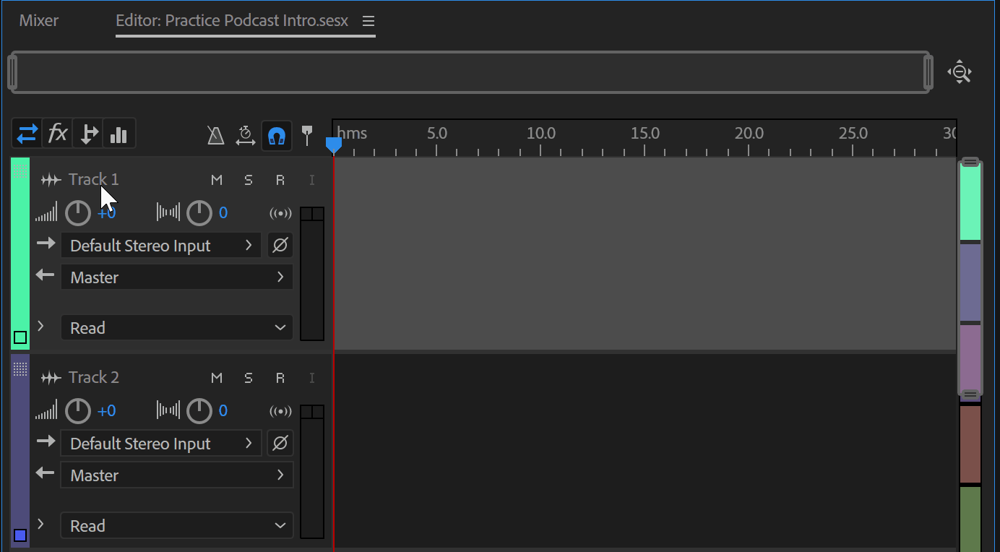

Adobe Audition
A Powerful Audio Editing Software
Intro to Audition
Adobe Audition is a digital audio workstation great for creating sound projects such as podcasts and songs! This software features both a Multitrack View for non-destructive editing and mixing, as well as a Waveform View for a destructive editing approach to a single audio file. If you’re at all familiar with other Adobe Creative Cloud programs, you’ll notice many similarities in the layout and tools used between softwares, making this program that more approachable.
Make sure to download the Class Files for this course from the Canvas page before you continue on.
Adobe Audition Interface
It should be noted that the following panels are opened automatically while using the Default setting. You can add or remove panels by going to the Window Menu. To change the setting, you can go to Window > Workspace and choose a new setting.
Panels
Learn more about the different panels that make up the interface of Adobe Audition below!
Editor
The Editor Panel is the space where audio clips are brought in to edit directly and/or add effects. Here is where you will be able to use editing tools such as the Razor Tool and Time Selection Tool to manipulate any audio within this panel. Audio clips brought into this panel might look slightly different depending on whether you are in Waveform or Multitrack view.
Editor Panel in Multitrack View:
Editor Panel in Waveform View:
Files
The Files Panel is where all audio files recorded into Audition (while on Waveform view) are automatically saved to. They can be referenced here and be brought into Multitrack view for further editing by simply clicking and dragging the audio file into the Editor Panel.
You can also import audio clips stored in your computer or external hard drive by clicking on the folder icon with the arrow pointing right and locating your file.
To have clips automatically play a preview once they're clicked, click on the Auto-Play button found near the bottom of the panel to activate it.
Media Browser
The Media Browser is a more detailed and quicker way to preview and import clips.
-
To create a shortcut to a folder you will be referencing a lot during a project, select the folder, click on the the plus sign near the top of the panel, and choose "Add Shortcut for Selected Folder(s)".
FOR THIS EXAMPLE: locate the Class Files folder you downloaded earlier and add it to Shortcuts.
- To have clips automatically play a preview once they're clicked, click on the Auto-Play button found near the bottom of the panel to activate it.
- To import clips, simply click and drag the clip(s) to the Editor Panel.
Effects Rack Panel
The Effects Rack Panel allows you to see all the effects that have been added to a single selected audio clip.
- The Effects Rack Panel is in the same area as the Media Browser Panel. To bring it up, click the two right arrows and select Effects Rack from the options. It will also automatically be brought up whenever you add an effect to an audio clip.
- To delete any effect, simply click on it and press the Backspace/Delete key on your keyboard, or click on the trashcan icon next to the presets.
- To edit an effect, double-click on it to bring up it's corresponding pop-up box.
History Panel
The History Panel allows you to see all of the edits that have been made to a project and allows you to navigate to different versions of the project before certain edits were made. You can go back to particular versions of project by permenantly deleting certain edits, however any edit that is deleted will also delete any edits that came after it.
Menu Bar
The Menu Bar has all of the tools and actions needed to complete our sound projects. We will be navigating the File, Edit, Clip, and Effects menus later on in this training, but feel free to explore for yourself the many different editing resources Audition provides!
Window
The Window Menu is where you can open or close different panels that appear within your workspace. Depending on what setting you are in (for us it's the Default setting), certain panels will already be selected under this menu, while others not. To add panels, simply click on one not yet selected from the Window Menu. Similarly, to remove panels, simply click on one already selected from the Window Menu.
Waveform vs. Multitrack View
Adobe Audition offers two session types to edit audio. One may be a better choice than the other, depending on what project needs to be completed. Read below to learn more about Waveform and Multitrack view.
Waveform
The Waveform view is a destructive editing area for a single audio file which means all edits are permanant to the original file once saved. You can always undo (Ctrl + Z/Cmd + Z) edits and save the file again to keep a past version of the file.
In case you want to record audio directly to Adobe Audition, make sure you are on the Waveform view as it is the only one of the two sessions that allows you to do so.
Multitrack
The Multitrack view is a non-destructive editing area for multiple audio files, which means that all cuts, edits, and effects done or added to the audio clips in one project will not change the original audio files.
All audio recorded in Waveform view can be brought into Multitrack view via the Files Panel.
Beginning a New Project
The following steps will guide you in creating your first project in Adobe Audition:
Opening a New Project
To open a New Project, go to File > New... and select either Multitrack View... to open a session that will let you import and work with multiple audio files, or Audio File... to open a session that allows you to import and edit a single audio file or the opportunity to record your own audio clip. Give it an appropriate name and make sure the folder is set to a location you'll be able to find it later.

FOR THIS EXAMPLE: open the Multitrack View and name the project "Practice Podcast Intro". You can always switch from one view to the other easily.
Renaming a Track
To rename a track, simply click once on the track's name on the Editor Panel to activate it. Change the name to something that reflects the audio clips on that track.
FOR THIS EXAMPLE: rename Track 1 to "Voiceover" and Track 2 to "Background Music".

Importing Files
There are multiple ways to bring in audio files saved on your computer or external hard drive to your Audition Project. Here are a few:
Importing From the Finder/File Explorer
- Open the Finder or File Explorer from your computer
- Find the folder where your audio files are saved in
- Click and drag the audio files directly to the appropriate Track on your Editor Panel
Importing From the File Menu
-
Go to File > Import > File...
- Select the audio files you would like to use and edit. To select multiple files at once, click on the files while holding down the Ctrl/Cmd key
- The imported files will appear in the Files Panel. Drag the file(s) to the Editor Panel tracks to edit them.
Importing From the Files Panel
- Navigate to the File Panel
- Click on the folder icon with an arrow point to the right.
- Select the audio files you would like to use and edit. To select multiple files at once, click on the files while holding down the Ctrl/Cmd key
Importing From the Media Browser
- Navigate to the Media Browser
- Find the folder where your audio files are saved in
- Click and drag the audio files to the appropriate Track on your Editor Panel
- FOR THIS EXAMPLE: import the two audio files from the Class Files folder you downloaded. Place each audio in the correct track.
Recording in Audition
Audition has a built in recording feature, allowing for audio to be recorded right into the software instead of having to record on a separate device and import it later.
Setting Up the Microphone
Usually your computer will automatically find and set-up the correct microphone, but in case that it doesn't, complete the following steps:
- Go to Edit > Preferences > Audio Hardware...
- Change the Default Input to the microphone you will be using. All connected and available microphones should be listed and labeled appropriately within that menu.
- You can also change the Default Output if you'd like your audio to come out a specific speaker or headphone
Recording
Once you have your microphone set up, you are ready to start recording!
Recording in Waveform View
- Make sure you are in Waveform View. If you are in Multitrack view, navigate to the top-left of your work station and click on the Waveform button or go to File > New > Audio File...
- If a New Audio File box pops up, name the file something relevant. FOR THIS EXAMPLE: Name it "Practice Voiceover" and keep the rest of the default settings as they are.
- Click on the Record button on the bottom of the Editor Panel to begin recording. Start your speech!
FOR THIS EXAMPLE: say "You're listening to the STS Show! Where you'll learn technology tips and tricks to get you feeling confident for any upcoming project. On today's show, we will be focusing on effects in Audition. So sit back, relax, and prepare to learn some sound design."
- Click the Pause button to temporarily stop recording or click the Stop button to completely stop recording.
- Click your Spacebar or the Play button to playback your recording
- Edit your audio as you would like. But remember that all edits within the Waveform View are permanant to the original file!
Note that your audio recording will automatically save to the Files Panel, where you can easily find for later use.
- Transferring Recordings From Waveform to Multitrack View
In case you recorded some audio in Waveform View, and want to edit it non-destructively or alongside other audio files, follow these steps to move recorded audio files from Waveform View to Multitrack view.
- Navigate to the top-left of your work station and click on the Multitrack button.
- Navigate to the Files Panel and locate your audio recording
- Click and drag your audio recording to one of the tracks in the Editor Panel.
FOR THIS EXAMPLE: click and drag the "Practice Voiceover" to one of the tracks, or use the "Voiceover" audio file provided from the Class Files.
Recording in Multitrack View
- Make sure you are in Multitrack View. If you are in Waveform view, navigate to the top-left of your work station and click on the Multitrack button or go to File > New > Multitrack Session...
- Navigate to the Track you would like to record on. FOR THIS EXAMPLE: Choose the Voiceover Track.
- "Arm the Track" by clicking the "R". It is now ready for you to record on that Track!
- Click on the Record button on the bottom of the Editor Panel to begin recording. Start your speech!
FOR THIS EXAMPLE: say "You're listening to the STS Show! Where you'll learn technology tips and tricks to get you feeling confident for any upcoming project. On today's show, we will be focusing on effects in Audition. So sit back, relax, and prepare to learn some sound design."
- Click the Pause button to temporarily stop recording or click the Stop button to completely stop recording.
- Click your Spacebar or the Play button to playback your recording
- Edit your audio as you would like!
Navigating Audio in the Editor Panel
It's important to know how to navigate your audio within the Editor Panel space before any editing takes place. Knowing how to do all of the following will help you edit your file(s) even better.
Playback Buttons
Just as with any standard audio device, Adobe Audition provides you with the basic playback buttons that you may already be familiar with. Going from left to right, the buttons are: Stop, Play, Pause, Move Playhead to Previous, Rewind, Fast Forward, Move Playhead to Next, and Record. There are more buttons nearby, but we will get to them in a bit.
The keyboard shortcut to Stop and Play is the Spacebar
You can also use your left and right arrow keys on your keyboard to rewind or fast forward
Zoom-In/Out
To zoom in or out, you can either:
- Click on the buttons found at the bottom of the Editor Panel right next to the playback buttons
- Hover over the bar in the Editor Panel and scroll up or down on your mouse. You can also hover over the audio clip and scroll up or down, but sometimes it doesn't work with the track pad.
- Select your audio clip and click the - or + keys on your keyboard
Moving Throughout Audio
To navigate to a different part of your audio while zoomed-in, go to the top bar of the Editor Panel and move the zoomed-in window accordingly.
Adjusting Volume
To adjust your volume, you can either:
- Drag the yellow line on the audio up or down within the track. To create more volume variation, click on different parts of the yellow line to create new audio volume anchors and drag accordingly. It does not matter what tool you’re using.
- Use the Volume knob on the track
FOR THIS EXAMPLE: Make the Voiceover track a bit louder so you can hear it better, and make the Background Music track quieter so it doesn't overpower the voiceover.
Looping
Click on the Loop Playback button. This feature allows you to loop parts of an audio selected with the Time Selection Tool. It is helpful for editing extremely detailed parts of an audio clip.
Manipulating Audio Length
Manipulate the audio length by dragging the ends of a clip inwards or outwards.
FOR THIS EXAMPLE: Drag the ends of the "Voiceover" audio clip so that it only contains audio with voice.
Mute and Solo
Click on the "M" on a track to mute all the audio clips on the track.
Click on the "S" on a track to solo all the audio clips on that track. This will mute all other tracks and their audio clips so that you can only hear the track on solo mode.
Basic Editing Tools
While there are more editing tools, the following three are the best to refer to when first working with Adobe Audition. These tools can be found right above the Files Panel, next to the Waveform/Multitrack buttons.
Audio Transitions
Adding audio transitions between clips and/or spaces between clips typically offers a smoother listening experience and helps a project sound more professional.
Fade-In/Out
- Locate the grey boxes in the top left and right corners of your audio file on the track.
- Click and drag the boxes towards the center of the audio to create a fade. The closer the to the center you drag the boxes, the longer the fades will be.
- Drag up and down to adjust the fade shape
Audio Effects
There is an incredible amount of effects you can add to your project in Audition. The following are great to get you started! All effects that are applied to a clip will appear in the Effects Panel. Here you can double-click on an applied effect to edit it.
Saving and Exporting
It is incredibly important to save your project as you're working on it. Once it is at a final stage that you are happy with, export it so that you can share your creation with the rest of the world!
Saving as an Audition Project
This is a standard method of saving which saves your current project so that you can come back to it and edit it later.
- Go to File > Save As...
- Name your file an appropriate title
- Choose a File Location that makes it easy for you to find your project later
- Click OK
Saving as a Complete Audition Session
This method of saving will create a new folder with the current audition session as well as all associated files. This is helpful if you plan to work from a different computer but need a one-stop-shop for all of the materials you used, particularly if they all came from different folders.
- Go to File > Export > Session...
- Name your folder an appropriate title
- Choose a File Location that makes it easy for you to find your project later
- Check the box labeled "Save copies of associated files"
- Click OK
Exporting
Exporting will allow you to share your project to the world (if you want)! These file types are smaller and don't requre Adobe Audition to be played.
- Go to File > Export > Multitrack Mixdown > Entire Session...
- Name your project an appropriate title
- Choose a File Location that makes it easy for you to find your project later
- Select the format you'd like to export your file as
- Click OK
Extra Tools and Resources
Log-in to Lynda.com with your NetID and password and search "Audition" to reveal many in-depth videos that will definitely guide you in your project development! This costly website is FREE for all UW-Madison students!
Need some royalty free sound effects? Go to this website to get some! You're required to open an account, but it's absolutely free and definitely worth the 1 minutes it takes to sign-up!
Need some free background music? Youtube offers an entire Audio Library just for this purpose! While all songs are free, make sure to see each song's specific conditions for use. Some like to recieve credit, while others do not and it's important to respect that!